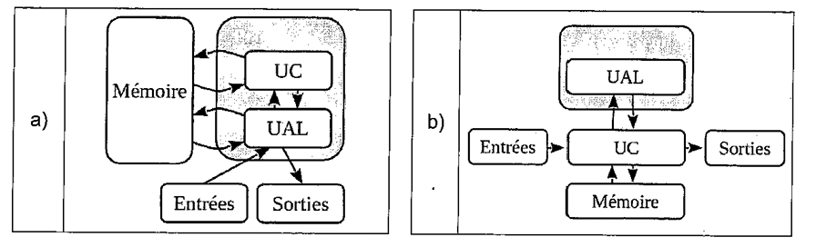
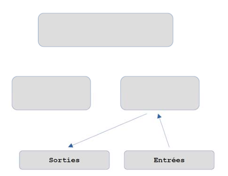
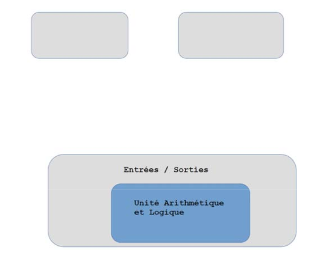
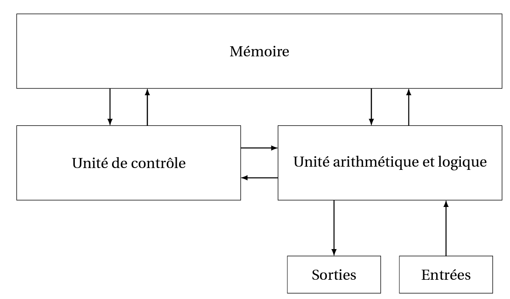

C21 Système à puces ⚓︎
Architecture de Von Neumann⚓︎

On distingue 4 zones essentielles :
- le CPU (Central Processing Unit) qui contient lui-même :
- l'Unité Arithmétique et Logique (UAL) dans laquelle sont effectuées les opérations de base (addition, multiplication...) Cette zone comporte notamment les registres (peu nombreux, de l'ordre de la dizaine) qui sont les espaces de travail ultra-rapides dans lesquels l'UAL va effectuer ses calculs. Une fois ceux-ci effectués, les valeurs des registres repartent dans la mémoire.
- l'Unité de contrôle, qui va séquencer les opérations. Lorsqu'on parle d'un processeur à 3 GHz, cela signifie (approximativement) que Unité de Contrôle va envoyer l'ordre d'une nouvelle opération à l'UAL 3 milliards de fois par seconde.
- la mémoire, qui contient à la fois les données à traiter et les instructions du programme. Cette idée de stocker au même endroit données et programme est l'idée centrale de l'architecture von Neumann.
- les bus de communication (des fils électriques permettant de transporter les données entre les différents composants).
- les Entrées/Sorties, permettant de gérer les informations avec l'extérieur.

QCM⚓︎
1. Dans le modèle d'architecture de Von Neumann, quel est le rôle de l'unité de contrôle ?
- a) Gérer le séquençage (l'ordre) des opérations
- b) Effectuer les opérations
- c) Lire les données
- d) Stocker les données
- a) Gérer le séquençage (l'ordre) des opérations
- b)
Effectuer les opérations - c)
Lire les données - d)
Stocker les données
2. Dans le modèle d'architecture de Von Neumann, que signifie UAL ?
- a) Unité Active de Lecture
- b) Unité Additive et Logique
- c) Unité Arithmétique et Logique
- d) Unité Active et logique
- a)
Unité Active de Lecture - b)
Unité Additive et Logique - c) Unité Arithmétique et Logique
- d)
Unité Active et logique
3. Quel est le rôle de l'unité arithmétique et logique dans un ordinateur ?
- a) Afficher les informations
- b) Définir l'ordre des opérations
- c) Effectuer les opérations
- d) Stocker les informations
- a)
Afficher les informations - b)
Définir l'ordre des opérations - c) Effectuer les opérations
- d)
Stocker les informations
4. Le composant élémentaire d'un ordinateur, circuit électronique ne pouvant être que dans deux états (0 ou 1) s'appelle :
- a) Un transistor
- b) Une radio
- c) Un processeur
- d) Une porte logique
- a) Un transistor
- b)
Une radio - c)
Un processeur - d)
Une porte logique
Système sur puce⚓︎
Composition d'un pc actuel⚓︎
Chaque composant a un rôle spécifique. Ils communiquent entre eux par des bus de différentes vitesses. Chaque composant est remplaçable, et il est possible d'ajouter de nouveaux composants sur la carte mère qui possède des slots d'extension.
Tout un pc sur une seule puce : les SoC⚓︎
L'intégration de composants différents au sein d'une même puce⚓︎
Le principe d'un système sur puce ou System On a Chip (SoC) est d'intégrer au sein d'une puce unique un ensemble de composants habituellement physiquement dissociés dans un ordinateur classique (ordinateur de bureau ou ordinateur portable).
On peut retrouver ainsi au sein d'une même puce :
- le microprocesseur (CPU)
- la carte graphique (GPU)
- la mémoire RAM
+ éventuellement des composants de communication (WiFi, Bluetooth...)
Avantages et inconvénients d'un SoC 
 Avantages
Avantages
- moindre consommation électrique
- moindre encombrement
- pas besoin de refroidissement
- meilleure sécurité (vue globale sur la sécurité qui n'est plus dépendante d'une multitude de composants)
- moindre coût (forte automisation du processus, gros volumes de production)
 Inconvénients
Inconvénients
- Impossibilité de choisir indépendamment ses composants
- Pas de mise à jour possible / remplacement / ajout d'un composant
- La panne d'un seul composant entraîne la panne totale du SoC
Cours⚓︎
Vous pouvez télécharger une copie au format pdf du diaporama de synthèse de cours :
Attention
Ce diaporama n'est qu'une synthèse de cours et ne donne que quelques points de repères pour de vos révisions.
BAC⚓︎
 Exercice 1 : D'aprés France Remplacement 2022⚓︎
Exercice 1 : D'aprés France Remplacement 2022⚓︎
Parmi les schémas suivants, lequel représente le mieux une architecture de Von Neumann :

Exercice 2 : D'aprés Polynésie J2 2021⚓︎
Cet exercice traite principalement du thème « architectures matérielles, systèmes d'exploitation et réseaux ».
Cet exercice mobilise des connaissances sur le routage et sur l'évolution des architectures des machines.
Partie A : Routage dans un réseau informatique
-
Expliquer pourquoi le protocole TCP-IP prévoit un découpage en paquets et une encapsulation des fichiers transférés d'un ordinateur à un autre via Internet.
-
On souhaite modéliser un réseau informatique par un graphe pondéré pour identifier le chemin optimal pour un paquet. a. Préciser ce que représentent les sommets et les arêtes du graphe.
b. Préciser si le protocole RIP utilise le nombre de sauts ou le délai de réception comme poids des arêtes.
Partie B : Système d’exploitation
Un système d’exploitation doit assurer la gestion des processus et des ressources.
- Dans ce contexte, expliquer et illustrer par un exemple ce qu’est une situation d’interblocage (deadlock).
- Citer des mécanismes permettant d’éviter ces situations.
Partie C : Architectures matérielles Architecture Von Neumann
« L'architecture dite architecture de Von Neumann est un modèle pour un ordinateur qui utilise une structure de stockage unique pour conserver à la fois les instructions et les données demandées ou produites par le calcul. De telles machines sont aussi connues sous le nom d’ordinateur à programme enregistré. »
Elle décompose l'ordinateur en 4 éléments : l'unité de contrôle (appelé aussi unité de commande), l'unité arithmétique et logique (UAL), la mémoire et les entrées-sorties. Les deux premiers éléments sont rassemblés dans le processeur (CPU en anglais pour Control Processing Unit).
- Recopier et compléter le schéma de cette architecture ci-dessous en faisant apparaître les communications entre les différents éléments.

- Dans quel(s) élément(s) sont situés le « compteur de programme » (CP ou IP en anglais pour Instruction Pointer) et le « registre d'instruction » (RI ou IR en anglais pour Instruction Register). Préciser leurs rôles.
Architecture de Harvard
« L'architecture de type Harvard est une conception qui sépare physiquement la mémoire de données et la mémoire programme. L'accès à chacune des deux mémoires s'effectue via deux bus distincts. […] L'architecture Harvard est souvent utilisée dans les processeurs numériques de signal (DSP) et les microcontrôleurs. »
- Recopier et compléter le schéma de cette architecture ci-dessous et faire apparaître les communications entre les différents éléments.

- Expliquer ce qu'est une mémoire morte et une mémoire vive. Expliquer brièvement pourquoi, dans les microcontrôleurs, la mémoire programme est une mémoire morte.
Partie D : Système sur puce
« Un "système sur une puce", souvent désigné dans la littérature scientifique par le terme anglais "system on a chip" (d'où son abréviation SoC), est un système complet embarqué sur une seule puce ("circuit intégré"), pouvant comprendre de la mémoire, un ou plusieurs microprocesseurs, des périphériques d'interface, ou tout autre composant nécessaire à la réalisation de la fonction attendue. »
- Citer un des avantages d'avoir plusieurs processeurs.
- Expliquer pourquoi les systèmes sur puces intègrent en général des bus ayant des vitesses de transmission différentes.
- Citer un des avantages d'un circuit imprimé de petite taille.
- Citer un des inconvénients de cette miniaturisation.
Reponse
Partie A
- [0.25 point] Pour permettre une détection et une correction plus facile des erreurs.
- a. [0.25 point] Les sommets sont les routeurs ou ordinateurs. Les arrêtes sont les liaisons entre ces éléments.
b. [0.25 point] Le nombre de sauts.
Partie B
- [0.5point] On suppose que l’on a deux processus A et B bloquant respectivement les ressources c et d. Si Battend cetAattendd, il y ainterblocage.
- [0.25 point] On peut veiller à ce qu’un processus libère une ressource avant d’en attendre une autre.
Partie C
-
[0.25 point] 
-
[0.5 point] Unité arithmétique et logique Sorties Entrées Le CP est situé dans l’unité de contrôle, il contient l’adresse mémoire de l’instruction en cours d’exécution. Le RIest aussi situé dans l’unité de contrôle, il contient l’instruction en cours d’exécution.
- [0.25 point]

- [0.5 point] Une mémoire morte se conserve sans alimentation contrairement à une mémoire vive. La mémoire programme est une mémoire morte dans un microcontrôleur car il faut la conserver lorsqu’on coupe l’alimentation.
Partie D
- [0.25 point] On peut effectuer plusieurs tâches en parallèle.
- [0.25 point] Les vitesses d’échange avec les entrées / sorties peuvent être différentes de ceux avec la mémoire.
- [0.25 point] Les échanges entre les éléments sont plus rapides.
- [0.25 point] Il est impossible de changer un seul élément en cas de panne, il faut tout changer. La puissance de calcul est généralement plus faible.
Bibliographie / Sitographie
- Numérique et Sciences Informatiques, Terminale, T. BALABONSKI, S. CONCHON, J.-C. FILLIATRE, K. NGUYEN, éditions ELLIPSES.
- Prépabac NSI, Terminale, G.CONNAN, V.PETROV, G.ROZSAVOLGYI, L.SIGNAC, éditions HATIER.
- Site de G.Glassus